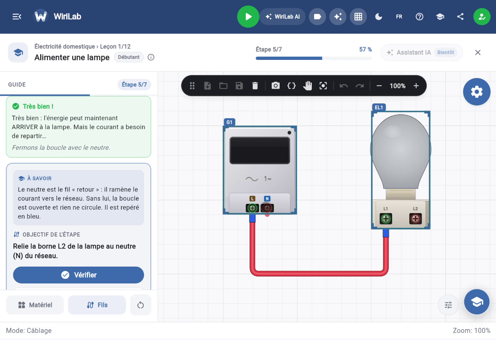

Outil · Formation
Simulateur d’électricité dans le navigateur : à quoi ça sert ?
Les centres de formation n’ont pas toujours un plateau libre pour chaque apprenant, ni assez de modules pour répéter un TP dix fois. Un simulateur comme WiriLab permet de câbler, mettre sous tension, mesurer et corriger depuis un navigateur — Chromebook, PC ou tablette — sans installer de logiciel lourd.

1. Ce qu’un bon simulateur reproduit
- Des composants avec bornes réalistes (disjoncteurs, interrupteurs, contacteurs, lampes).
- Des fils que vous posez vous-même, pas seulement un schéma animé.
- Une réaction à la mise sous tension : lampe, défaut, disjonction.
- Des instruments (multimètre) pour enchaîner avec les compétences de mesure.
2. Pour qui ?
Élèves : réviser la veille d’un TP, refaire un montage raté. Formateurs : démonstration en classe, préparation de sujets. Autodidactes : premier contact avec l’électricité dans un cadre contrôlé.
3. Limites honnêtes
Le simulateur ne remplace pas le serrage d’une vraie borne, le poids d’un câble dans une goulotte, ni l’habilitation sur installation réelle. Il complète la formation : on y apprend la logique, puis on la valide sur le plateau.
4. Commencer sans friction
Pas d’installation : ouvrir le site, créer un compte gratuit, lancer un montage vide ou un TP guidé. Les sauvegardes permettent de reprendre le lendemain.
À retenir : le navigateur devient un atelier de répétition ; le terrain reste l’étape de validation des gestes physiques.